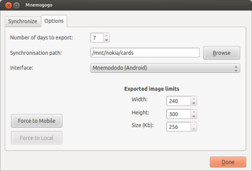
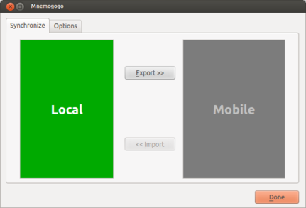
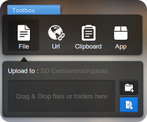

Mnemogogo is a plugin extension for the spaced-repetition
flash-card program Mnemosyne.
It enables cards to be reviewed on a mobile phone.
Mnemogogo does not replace Mnemosyne—cards are still added and edited at a
computer.
Rather it adds the ability to export several days worth of scheduled and new
cards to a mobile device, like a phone or palm pilot, where they can be
reviewed and graded before eventually being imported back into Mnemosyne.
Exported cards are reviewed on a phone using custom apps.
Three apps are currently available:
Download the
Mnemogogo plugin.
(The previous version, for Mnemosyne 1.2.2 is still available
here.)
Start Mnemosyne, choose Settings/Manage plugins...,
then click Install new plugin and select the file downloaded
in the previous step.
Configuration
Start Mnemosyne.
From the Cards menu, select Mnemogogo.
Select the Options panel, see Figure 1.

Figure 1: The Mnemogogo options panel.
Choose the number of days to include in the export.
I recommend choosing between 5 and 8 days.
More days means less frequent updates, but also that exports will take
more space and time to store and load on your phone.
If you choose too many days, it may not be possible to run the client
software on your phone at all.
Choose a directory to save the exported cards.
This directory must either be on your phone, or, if not, it must be
later copied or synchronized with your phone.
More detailed instructions are given below.
Usually, it is most convenient to mount your phone's SD card (as a USB
mass storage device) and to export directly to a folder within it.
For Mnemojojo, the Java client, it is usually best to export directly
into a top-level directory called cards on your phone or
SD-card.
For Mnemododo, the Android client, it makes no difference where the
cards are exported.
If you have a Java-enabled phone then choose the
Mnemojojo interface.
If you have an Android phone then choose the
Mnemododo interface.
Fill in appropriate maximum values in the Exported image
limits section.
These values are used solely to tune the images exported to your
mobile phone so that they will fit on the screen and within the
available memory.
The export and mobile clients will work regardless of whether the
numbers are accurate or not.
Use
From within Mnemosyne, open the Mnemogogo panel; see Figure 2.

Figure 2: The Mnemogogo main panel.
Click the export button to export cards and statistics
to your phone.
This will also (temporarily) prevent reviewing within Mnemosyne, but it
will still be possible to add, edit, and delete cards.
It is not possible to simultaneously review cards on
your PC and on your mobile phone.
Note that Mnemogogo only exports active categories.
Categories can be activated or deactivated from within Mnemosyne
(From the Cards menu: (De)activate cards...).
If necessary, copy the exported subdirectory onto your
mobile phone.
This can be done manually after mounting your phone as an external hard
drive, or by using software provided with your phone.
Alternatively, using dedicated synchronisation software will reduce the
chance of making a mistake (and possibly losing hard-earned gradings).
Suitable applications include:
After reviewing cards on your mobile phone, the
statistics need to be imported back into Mnemosyne.
First, make the cards directory available on your PC at the
path configured in the Options panel; either by mounting it
appropriately, by copying the folder manually from the phone, or by
running synchronisation software.
Then start Mnemogogo and click the import button.
For further mobile reviews, simply repeat the above steps.
In particular, click export immediately after an import, and
resynchronize, in order to continue mobile reviewing with updated
cards.
Synchronizing without the USB Mass Storage Device feature
Some phones, like the Nexus 4 and the Samsung Galaxy S3, S4 and Note, do
not enable the mount as USB Mass Storage Device option, which is
the easiest way of exporting from and importing to Mnemogogo. They instead
provide the MTP protocol, which is not really well supported by
Windows, Mac, or Linux. In particular, programs like Mnemogogo cannot
simply use it to access files using the standard interface that has
existed for decades (file open, write, and close). Instead, they receive
strange errors like The folder name is not valid. Complaints
about this situation abound on the internet.
So, how do you get the files exported from Mnemogogo onto your phone?
I have four suggestions. Please mail me
if you have any others.
Many people will wonder why Mnemododo does not provide an in-built
synchronization feature. Mnemododo is focused on reviewing cards exported
from Mnemosyne. The design relies on other software to transfer files back
and forth. This works very well for phones that can be mounted as USB Mass
Storage Devices. The process is simple, fast, reliable, secure, and does
not expose your data to any third parties. For phones without this feature,
the procedures given below should help. If not, please do not hesitate to
contact me.
Copy manually with Windows explorer.
Of all the platforms, Windows provides the best support for the MTP protocol,
but, for some reason, the standard file access mechanism is not provided to
programs like Mnemogogo.
The work-around is to export/import locally and to manually copy back and forth
using Windows explorer.
To export:
At your phone: quit Mnemododo using the back button.
At your computer: after connecting your phone, drag and drop the
folder from your desktop into a folder on your phone. If necessary,
choose to replace all existing files.
Start Mnemododo.
To import:
At your phone: quit Mnemododo using the back button.
Connect your phone to your computer.
At your computer: drag and drop the folder from your phone onto your
Desktop. Choose to replace all existing files.
At your computer: import from the newly-copied folder with
Mnemogogo.
Manually move your SD card between your phone and computer
At your phone: quit Mnemododo using the back button.
At your phone: safely unmount the SD card (from the global settings
panel.)
Put the SD card into your computer and wait for it to appear.
Put the SD card back into your phone and wait for it to be mounted.
Start Mnemododo.
Use the synchronization software that came with your phone.
Many phones come with proprietary synchronization software that can be
used to copy files back and forth between your computer and phone. This
feature can be used to transfer files between Mnemogogo and Mnemododo.
Note: it would seem that Samsung's Kies application is not very good at
transferring folders. Please let me know
if you have any success with it!
To export from your computer:
Export from Mnemogogo to a folder somewhere on your computer.
Use the synchronization software to copy this folder onto your phone.
To import from your phone:
At your phone: quit Mnemododo using the back button.
At your computer: use the synchronization software to copy this folder
back onto your phone replacing the files that were exported
before.
At your computer: use Mnemogogo to import this folder.
Use a cloud synchronization service.
There are many services, like DropBox
which can synchronize your computer and phone with online storage. They can
be used to copy files back and forth between your computer and phone. Note that
Google Drive cannot (yet) be used
for this purpose: it only works on newer Android phones and it is not
properly supported on Linux.
You will need to configure the cloud storage software on your computer to
synchronize a folder. You will also need to install the related app on your
phone and configure it to synchronize with the same folder.
To export from your computer:
At your phone: if necessary, quit Mnemododo using the back button.
At your computer: export from Mnemogogo into the synchronized folder.
At your phone: wait for the new contents to appear and then start
Mnemododo.
To import from your phone:
At your phone: quit Mnemododo using the back button.
At your computer: wait for the folder to synchronize completely, then
import into Mnemogogo.
Use a third-party wireless transfer app.
Several apps that can transfer files to and from your phone over a network
are available. These instructions describe the steps for
AirDroid, but other apps should work in
a similar way.
Important!: AirDroid requires
the Chrome web browser to
upload entire folders, and thus to work properly with Mnemogogo.
Connecting to your phone:
At your phone: start the app. It should give a URL (like
http://1.2.3.4:8888) that you can use to connect to
your phone.
At your computer: type this URL into a web browser. You will
then normally need to accept the connection at your phone.
To export from your computer:
At your phone: if necessary, quit Mnemododo using the back button.
At your computer: export from Mnemogogo into a folder on your computer.
If you are using AirDroid, drag the folder onto the upload panel, that
looks like this:

Figure 3: The AirDroid upload panel.
Very important!: Do not use the other upload buttons, they
do not seem to transfer files without file extensions, so files
like CARDS and CONFIG are not transferred.
At your phone: start Mnemododo.
To import from your phone:
At your phone: quit Mnemododo using the back button.
At your computer: from within the AirDroid interface, locate the
folder you transferred earlier (normally under .../airdroid/upload),
right-click on it and choose Download as ZIP.
Open the zip file and copy the downloaded folder over the top of
the original folder on your computer, choosing to replace all the files.
Import the newly replaced folder using Mnemogogo.
Solutions to common problems
The filenames of the exported files and directories
(STATS.CSV, IMG, etc.) are in lowercase on
the phone.
All of the filenames must be in UPPERCASE letters. If you are using
Linux, you may have to add the shortname=winnt option to
the entry in /etc/fstab for the SD card filesystem.
Help! My phone crashed and now Mnemododo complains that
‟The exported cards are corrupt”.
This indicates that your phone crashed so suddenly that Mnemododo was not given
enough time to fully write the STATS.CSV file.
You should be able to recover most reviews by copying STATS.BKP over
the top of STATS.CSV and restarting Mnemododo.